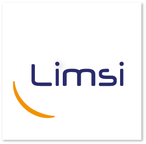
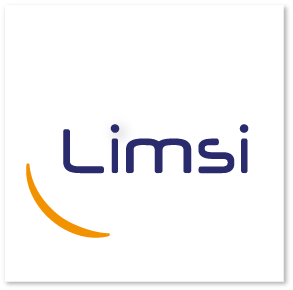

Coréférence événementielle cross-document dans les dossiers patient électroniques
Résumé
Les références à des phénomènes du monde réel et à leur caractérisation temporelle se retrouvent dans beaucoup de types de discours en langue naturelle. Ainsi, l’analyse temporelle apparaît comme un élément important en traitement automatique de la langue. Ce projet a pour objectif d'analyser des textes en domaine de spécialité, des dossiers électroniques patient, du point de vue temporel et chronologique. À partir d'un ensemble de documents contenus dans le dossier d'un patient, ce travail permettra de repérer les événements saillants de l'historique médical du patient ainsi que les marqueurs temporels associés afin de les agréger dans une chronologie synthétique, qui aura pour vocation d’être analysée par des cliniciens et comparée à la prise en charge de référence. Pour ce faire, ce projet abordera la coréférence multi-document, une problématique complexe peu traitée jusqu’à présent, en étant guidé par le contexte applicatif de l’analyse clinique rétrospective en cancérologie qui facilitera la normalisation des événements
Dates
Octobre 2015 - Septembre 2018
Participants
 

Publications
2016
Extraction de relations temporelles dans des dossiers électroniques patient.
In Actes de la 23ème Conférence sur le Traitement Automatique des Langues Naturelles (TALN 2016, article court). Paris, France, July 2016.
BibTeX - Paper - Poster
LIMSI-COT at SemEval-2016 Task 12: Temporal Relation Identification Using a Pipeline of Classifiers.
In Proceedings of the 10th International Workshop on Semantic Evaluation (SemEval 2016). San Diego, USA. Jun. 2016.
Selected for the "Best of SemEval 2016"
BibTeX - Paper - Presentation slides ("Best of SemEval") - Poster
Contact
Julien Tourille (LIMSI)